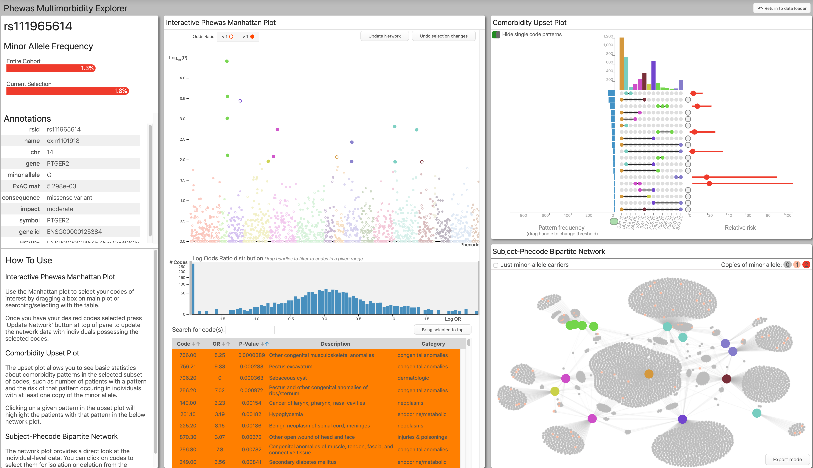
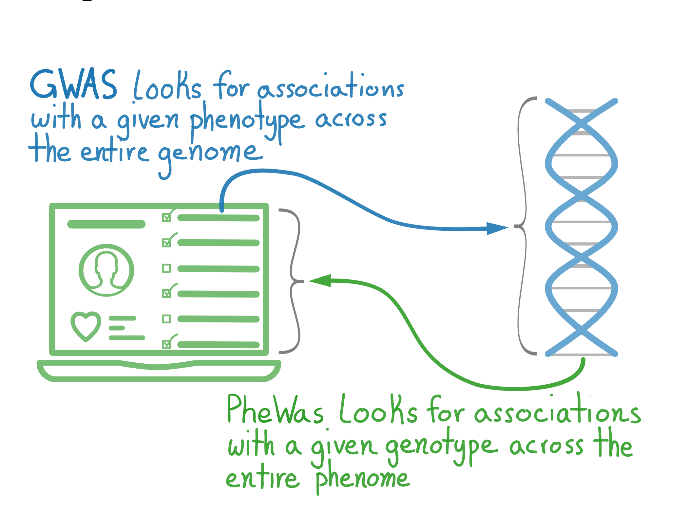
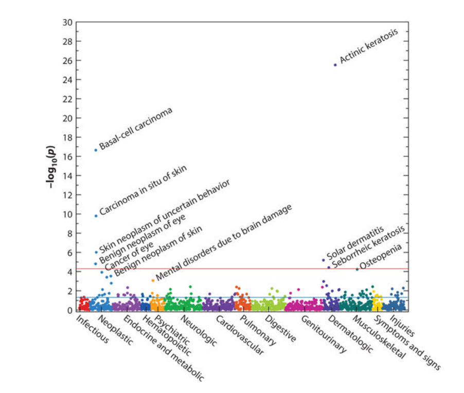
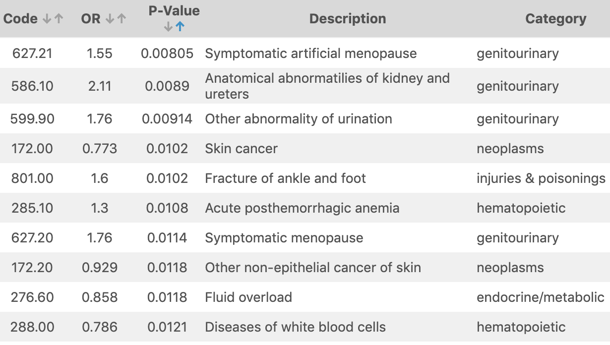
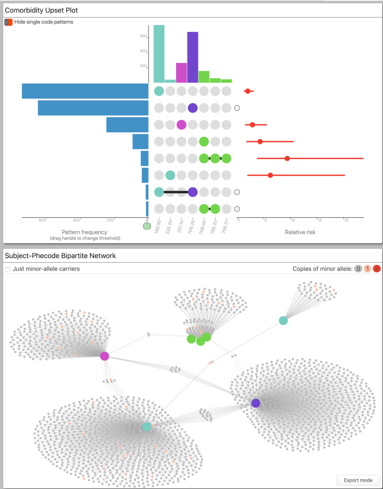
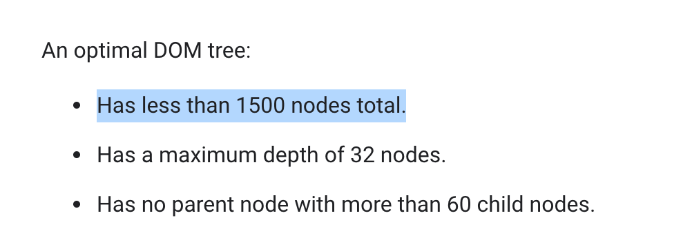
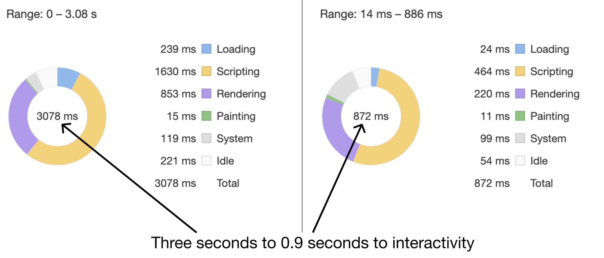
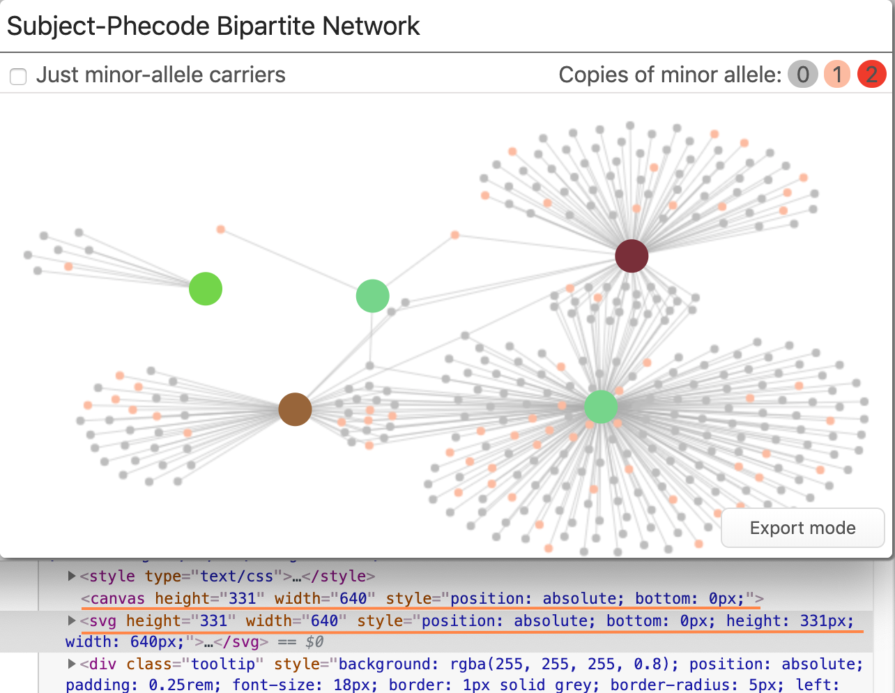
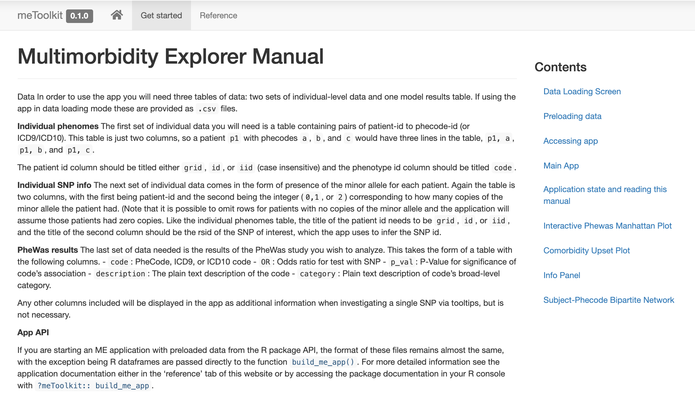

This post is a longer-form and less-formal accompaniment to the manuscript just up on MedRxiv: “PheWAS-ME: A web-app for interactive exploration of multimorbidity patterns in PheWAS” and accompanying application.
PheWAS-ME: A web-app for interactive exploration of multimorbidity patterns in PheWAS https://t.co/H7htmgWsK0 #medRxiv
— medRxiv (@medrxivpreprint) October 24, 2019
As the first of three papers that make up my PhD dissertation, the project represents a significant collaborative effort bringing together Electronic Health Records (EHR) and Biobank data using R and Shiny.
The main dashboard view of Phewas-ME. 
I have organized the following into three primary sections: what the app does, why it does it, and how it works.
What
What is the app?
The paper describes Phewas-Multimorbidity Explorer (Phewas-ME): a Shiny app that we have been producing over the past two years in collaboration with the Vanderbilt Drug Repurposing team. It is an interactive data exploration tool for digging into PheWAS results and the subject-level data that generated those results.
What is Phewas?
PheWAS is a statistical method for finding associations between a given genetic mutation (often a Single Nucleotide Polymorphism, or SNP) and phenotypes. It is a sibling to the GWAS (genome-wide association study). However, in GWAS, you fix your desired phenotype and scan the genome for associations, whereas in PheWAS, you fix a genetic mutation, and scan the ‘phenome.’
Slide from my talk Taking a network view of EHR and Biobank data to find explainable multivariate patterns. 
What is the data?
Both PheWAS analyses and Phewas-ME take two types of subject-level data. First is information on a given genetic mutation. In this case, 0, 1, or 2 copies of the minor allele of an SNP. The second is the subject’s ‘phenome.’ In this case, a list of every phenotype that they had. In the paper and this blog post, we have used the Vanderbilt developed ‘Phecode,’ but any binary phenotype information works. In this post, when I refer to ‘codes’ I mean ’phecodes.
Why
Why is the app needed?
Phewas-ME came out of the need for subject-experts to dig through the very high-dimensional results of PheWAS analyses. Unlike a typical statistical analysis, which may return just a handful of p-values or effect-sizes of interest, a PheWAS analysis returns a single p-value and effect-size for every phenotype in the scanned phenome. In the case of Phecodes, this is around 1,500 (and goes into the many thousands for more traditional ICD-based encodings).
Previous methods
In the past, communicating these results was accomplished using two different tools.
First is a manhattan plot: or simply a plot of every phenotype investigated and their significance (as encoded by the negative log of the p-value). This plot allows the reader to pick out which codes are significant in the results.
Manhattan plot for PheWAS results. Taken from Denny et al, 2016 
The second is the ever-present table. A PheWAS table has columns on all sorts of values of interest such as p-value, effect-size, phenotype description, etc.. Due to a large number of phenotypes typically present, these tables often get filtered to only includes codes that fit some criteria, such as significance level.
Table of PheWAS results from simulated data provided with app. 
Problems with previous methods
While looking at the most significantly associated phenotypes is straightforward, it can mask important aspects of the data. Different phenotypes across the phenome correlate with each other in complex ways. These correlations manifest themselves in common patterns of phenotypes called multimorbidities (also referred to as comorbidities). Since PheWAS looks at single SNP and Phenotype associations, these correlations can be extremely hard to discover and reason about with a traditional manhattan plot and table report.
Why does our app fix these problems?
PheWAS-Multimorbidity Explorer helps subject-matter experts parse through the results of a PheWAS analysis by letting them isolate and explore specific regions of phenotypes by looking not only at their p-values and effects-sizes but also by the subject-level data that generated those results.
The analyst selects a set of phenotypes to explore by dragging a selection box around a region in a manhattan plot, choosing directly from a table, or using text-search. Once a desired set of phenotypes is selected, the application displays the subject-level data using an interactive force-directed network plot and an upset plot.

These subject-level visualizations allow the analyst to see patterns of comorbid phenotypes directly and to interrogate their potential causes. For instance, often, a group of codes are highly correlated because they are more or less specific definitions of the same phenotype, e.g., cancer -> lung cancer -> stage 2 lung cancer. In the above plot, you can see a cluster of phenotypes in light green. This cluster is caused by the afformentioned phenotype hierarchy, with each refering to the same broad-level phenotype with differing levels of specificity. Another possibility is multimorbidity caused by drug side-effects; e.g., patients taking a drug to treat the cancer phenotype likely also have the nausea phenotype.
How
How is interaction used in the app?
Interaction with Phewas-ME centers around one primary thing: a list of currently selected phenotypes. The typical way to choose these phenotypes is by using the Phewas results panel.

This panel includes the traditional manhattan plot and results table; however, they are now interactive. Selecting codes using this panel can be done in a few different ways.
Code Selection
Region Dragging
The user can drag a box around a region in the manhattan plot, selecting the codes within. Adding another region to the selection is accomplished by holding down the ‘a’ key (for add) and dragging another box. Conversely, removing a region of codes from the selection can be done by holding down the “d” key and dragging a box.
Code Clicking
Clicking individual phenotypes in either the plot or the table toggles their selected-ness. This slower but more precise method allows for fine-grained tuning of the selected codes.
Search
Above the results table is a search bar. The user can search for phenotypes by name or description. Codes that match a supplied search query are raised to the top of the results table and highlighted. The user can then select codes as needed.
Network Filtering
In the subject-level network plot, nodes corresponding to phenotypes can be used to filter the selection further. After selecting codes in the network plot by clicking, users can delete from the current selection, isolate a subset, or invert (this flips the definition of a connection to a phenotype in the network to the lack of that phenotype in a subject’s phenome).
Other interaction
Outside of phenotype selection, there are a few other forms of interaction.
Pattern Highlighting
When a user clicks on a given pattern in the Upset Plot panel, the network plot updates to highlight the subjects who have that pattern. Similarly, if a phenotype node in the network plot itself is moused over, the subjects connected to that phenotype are highlighted.
Info Tooltips
In both the manhattan plot and the network plot, when a given phenotype’s point is moused-over, a tooltip with all the supplied information for that phenotype appears.
SNP Filtering
A check-box by the network plot allows the user to show only carriers of the minor allele of interest in the network plot. This helps differentiate between genetics driven network patterns and simply population trends.
Upset Interaction
There are two helpful interaction aides not present in the original UpSet plot.
Singleton Toggle First, a toggle allows the hiding of single-phenotype patterns (i.e., subjects who had just a single phenotype). Often these singletons can crowd out the more exciting comorbidity patterns, so by hiding them, the user can focus on the patterns.
Minimum Pattern Size Slider Second, a slider allows the user to set the threshold for inclusion in the plot based on the number of times a pattern appears. Often there will be patterns of phenotypes that are only had by one or two subjects. Because of their tiny sample-sizes, these are usually not of interest, so filtering them out can again improve the plot’s effectiveness.
How was it made?
There is a lot of exciting tech going on behind the scenes of Phewas-ME.
General App
Framework
The main app is built using the Shiny package/framework in R. An R package was created to wrap all the code, easing deployment and customization. There are two main functions in the package: run_me() which takes dataframes of all necessary information as input and starts at the main dashboard; and also build_me_app() which returns an app that starts at a data-loading screen where the user can either load data using spreadsheets, or pick from a list of pre-populated datasets. All individual plots and panels exported by the package as shiny modules. This modular format eases the creation of customized versions of PheWAS-ME.
State Management
The reactivity protocol of shiny works great if you have a single component of your app that listens to and modifies unique parts of your apps state. In PheWAS-ME, multiple components listen to the same state variables (for instance, both the PheWAS results table and the network plot modify the currently selected codes). A state management system inspired by Javascript’s Redux was built to keep each component pure and modular.
Broad level idea of how Redux works, via the jscrabler blog 
In this system, a single message-passing reactive value is supplied to all of the separate components. When a component needs to modify the state, it sends a message through that reactive value to the main app.
As an example, if the user removes a code using the network plot. The network plot module sends a list to the message passing reactive variable containing an action type: 'delete code', and then a payload: '008.12'. Then at the main app level, an observeEvent() chunk that watches that message passing reactive reads the message and modifies the appropriate state variables, in this case, the selected codes list.
shiny::observeEvent(app_interaction(),{
action_type <- app_interaction() %>% pluck('type')
action_payload <- app_interaction() %>% pluck('payload')
action_type %>%
switch(
delete = {
codes_to_delete <- extract_codes(action_payload)
prev_selected_codes <- state$selected_codes()
state$selected_codes(
prev_selected_codes[!(prev_selected_codes %in% codes_to_delete)]
)
},
selection = {
...
},
...
)
...
})By isolating all state modification in a single observable chunk, the primary app state is only ever modified in a single place. This isolation reduces the amount of overhead required to reason about state changes, both for Shiny and the programmer.
R to Javascript Communications
Every visual in the app is built using custom javascript and HTML. The fantastic package R2D3 is used to facilitate the handoff of data between R/Shiny and the javascript visualization code.
Manhattan Plot
The manhattan plot is built using d3js, the popular javascript visualization library. With such a large number of points plotted, finding points within a selected area can be very slow when naively searching through every point.  A 2d quadree storing datapoints. These subdividing boxes are stored as in a tree-structure, which is always a big-O help. From wikipedia The javascript code utilizes a special data structure known as a quad-tree to speed up finding codes within a region. By storing data in a hierarchical location-aware tree, a quad-tree only searches through points near the selection, cutting down on the computation needed and speeding up app reaction times.
A 2d quadree storing datapoints. These subdividing boxes are stored as in a tree-structure, which is always a big-O help. From wikipedia The javascript code utilizes a special data structure known as a quad-tree to speed up finding codes within a region. By storing data in a hierarchical location-aware tree, a quad-tree only searches through points near the selection, cutting down on the computation needed and speeding up app reaction times.
PheWAS Table
Like the manhattan plot, the PheWAS table has tricks to help keep the app responsive while also showing large amounts of data. The browser stores all the elements on a webpage in a text-based format called the DOM (or Document Object Model). (What you get when you right-click and say ‘view source.’) When a browser renders the page, it parses through the DOM and figures out how to place that element on the screen. Because the browser has to parse through so much every time it wants to update the screen, there are limits to how many elements can be stored in the DOM before things start slowing down.  Recomendations from developers.google.com for optimal DOM performance. Oops! Displaying a table of more than 1,500 phenotypes, along with 5+ columns, quickly hits that limit.
The trick used to display a large table while not overloading the DOM is only rendering a small portion of the table at a time. At any moment, only 50 rows of the table are actually in the DOM. As the user scrolls down, the javascript writes new rows at the bottom and removes old rows from the top. As to maintain the illusion that the entire table is available for scrolling, secret elements placed above and below the visible rows that expand and contract to simulate a table with every row filled in. The user sees a table just like it was full of 1,000 rows, but the browser only has to render 50. Implementing this optimization resulted in interaction latency dropping by ~4 times.
Performance improvements in results table after implementing smart-table. Via the Chrome devtool’s lighthose audits tool. 
UpSet Plot
Like the manhattan plot, the upset plot is drawn using d3. Unlike the results table, there are not too many elements to draw here, so no fancy tricks are needed to speed it up.
Network Plot
The network plot was where the most coding and optimization hours were spent. The goal was to have a plot that could show every subject’s data. To draw every subject often involved drawing tens of thousands of points and even more links. Also, since the user would be on-the-fly reconfiguring the data displayed, we needed to calculate the layout in real-time.
Drawing lots of points and lines Plotting lots of points and lines had a relatively simple solution: use the Canvas element rather than the SVG. The Canvas element allows the user to draw to the screen at the pixel-level, basically coding an image. Because the Canvas element acts as a fancy image, the DOM only has a single item added is not slowed down.
Adding interactivity The only issue with the canvas element: there’s no easy way to detect if a component of the chart is interacted with by the user. We wanted interactivity with the phenotypes (e.g., mouseover and selection). Adding interactivity was solved by overlaying an SVG element on top of the Canvas element. The SVG element draws only the phenotype nodes. We could then use the SVG’s built-in intersection observers to detect interaction, rather than building a custom solution using things like hidden colors.
Both the Canvas and the SVG are absolutely positioned within the parent to make sure they overlap properly. 
Exporting paper-ready plots One feature that was frequently requested was the ability to export the network plot for use in a publication. Since canvas elements are just raster-images, they didn’t scale well when exported. To allow for clean high-res exports, an ‘export mode’ was added that switches all rendering to the SVG (which is vector-based) and adds a download button. Also available is a callouts mode where little draggable annotations for each phenotype name are added. When a user presses the download button, the SVG element is converted to the SVG file format and downloaded the user’s computer. Adobe Illustrator or other vector-based tools can be used to insert the plot into a figure or PDF.
Not visible due to compression for video: a slight increase in sharpness when switching to all SVG-Rendering.
Calculating a force-layout in real time Calculating the layout was relatively easy to do: D3 includes a sub-library for running force-layout simulations. The problem is these force simulations are computationally intensive, especially when you start running them on large networks. When you run computationally intensive tasks in javascript, your app will slow to a crawl because the same thread responsible for updating the screen is also running those calculations.
Our solution was to offload the layout calculation to another thread using a technology called ‘web workers.’ Web workers allow javascript code to run on another thread and communicate with the main thread through a series of asynchronous callbacks.
 Web workers are there own threads with their own event loops, so they don’t slow down your main page. Source: Barbaric Basics.
Web workers are there own threads with their own event loops, so they don’t slow down your main page. Source: Barbaric Basics.
// Function to send new network data to webworker
function send_new_job(network_data, callbacks){
const {on_progress_report, on_finish, on_layout_data} = callbacks;
// Initialize the worker
worker = new Worker(worker_url);
// Send worker the data we are working with
worker.postMessage(network_data);
// Control what is done when a message is received from the webworker
worker.onmessage = function(event) {
switch (event.data.type) {
case "progress_report": return on_progress_report(event.data.progress);
case "layout_data": return on_layout_data(event.data);
case "end": return on_finish(event.data);
}
};
};When the network plot receives new data, it spins up one of these web-worker threads, sends the data to it to run the layout simulation. The simulation web worker sends back occasional updates on the node positions to the main thread to update the plot, assuring the user it is doing something and not frozen. This adaptation meant that massive networks could be laid out and rendered without causing any perceivable slowdowns on the main app.
How can I use the app myself?
Do you have data of the form described and want to try the app out yourself? There are two main methods for doing so.
Hosted Version
We have a version of Phewas-ME up and running on our lab’s website that anyone can use. There is a simulated dataset for exploration, but a data loading screen allows you to test out with data you upload yourself.
An R Package
As mentioned before, the application lives in an R package. Because of this, running it locally is as easy as installing the package from GitHub using…
devtools::install_github('tbilab/meToolkit')…and then starting an app up with the function run_me().
If you want to learn how to make an app that loads directly to a given dataset or preload data, check out the online documentation for the package at prod.tbilab.org/phewas_me_manual.
The package’s beautiful website, courtesy of pkgdown! 
Question or Comments?
If you would like to know any more about the application, package, or manuscript, send me an email or twitter DM!